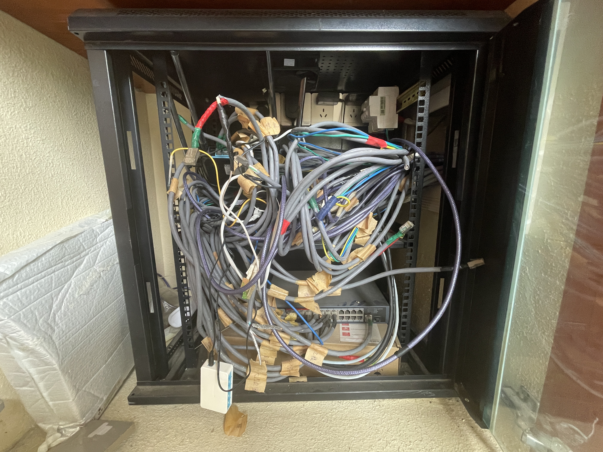

6-7月小记
目录
琐事#
6月10号之后的时间都在备考，考试安排得断断续续，考完后已经是7月中旬了。这之后立马动身去北方，这是家里人的要求。
行程安排得比较紧，不过好处是效率高，一天就到了。去看了草原，说是拍了某某电视剧的地方。傍晚的阳光照射下确实很美，
拍了几张照留念，结果第二天一早又被拖起来拍。能看到平时不常见的景象确实不赖，但终究只是一饱眼福，又不会长期住下来；为了一时风景而四处奔波，对我来说还是太过头了。
久违的逛了超市。推着购物车到处走，心情竟意外地雀跃了起来。超市总让人觉得“来都来了，一定要买些什么”，令人不爽的同时，也确实让人获得了点生活的动力，仔细想想需要什么，家里缺了什么；毕竟既不想空手而归，也不想买一堆没用的东西堆在家里。现代生活中的很多东西，因为太方便了，反而叫人提不起劲来。
从北方回来后又是练车。学车的体验并不好，练车和打卡是分开的，要打卡就只能坐在打卡机前干等，练车也不能同时打卡；打卡学时不够教练还不愿意教，不教就只能自己摸索，实际上手却发现一点也不难，自己开几趟就熟练了；结果花钱报驾校，得到的就只是个考试资格，还要浪费大量时间作为代价。然而年轻人们已经很习惯浪费时间，打完备考科目的学时还不够，连之后的所有学时都要抢着打，反正在驾校还是在家都是刷手机，没有区别。想要打卡还得排长队，一人一个小时。
家里的网络断了，据说是某个雷雨天劈坏了什么设备。借此契机，终于鼓起勇气把网络布线给捋明白了。

前任屋主的杰作，显然这位老太太室内装潢很拿手，对网络却不太上心。测了半天，发现坏的部分是连接全屋网线的交换机。把地下室的路由器拆过来暂时替代。coding#
csapp中提到了一种精细的性能计量单位CPE（cycles per element），我尝试参照书中的描述实现自己的版本，用lfence清空流水线和最小二乘来对抗乱序执行，但仍然无法得到正确反映的数值。最后想到可能是编译器o3条件下把测试循环当死代码去除了，一看汇编果然，遂将受测函数单独编译链接，但仍然会被优化掉。最后实在想不到解决方案，搁置一段时间后问了ai，解决方案简单得可笑：把测试循环也单独提出来作为一个编译单元，分为主模块，测试模块和受测模块，且受测函数以指针形式传入测试函数。不开flto的情况下编译器不敢消除任何过程，且每个部分的优化等级都能独立控制。
翻新了我的软渲染器，相比旧版添加了sub canvas概念，为图形界面与分块绘制做准备；实现了逐个三角形的分块绘制，思路是一个线程负责分块，剔除并提交，另外7个线程批量取并绘制。一开始用栈来存储块，后来实现了环形队列，但发现效果提升比较有限，批量存取带来的提升更大。（环形队列的优势是fifo和读写间无锁，这两点对我们影响相对小）
将ppm文件格式作为简易的渲染前端，唯一的问题是ppm的24bit rgb是紧密排列的，后端渲染时直接对紧密数据操作，可能会导致更多的跨越cache line与块边缘的false sharing；在这些坏处下仍然通过多线程获得了3-6.25倍的性能提升（无负载到高负载的随机三角形）。此方法的缺点是对小三角形完全没用，另一个比较简单的想法是将屏幕分块，给每个块上锁；为了降低竞争，就会需要将三角形分到各个块中，这样不断优化下去的尽头就是无竞争的tbr（结果还是没能逃掉）。不过好在现在有了sub canvas机制，三角形分配并绘制会变得简单很多。
补记：批量存取带来的提升主要来自于减少互斥锁的开销：每次锁定都会陷入内核，且标准库为了简化设计允许虚假唤醒。要么换成自旋锁，要么延长每次锁定的间隔。当时采取的是后者，因为还没搞清楚atomic具体是怎么工作的，就在原版基础上做了简单的修改。这（也许）也间接降低了false sharing压力。学习了atomic后还尝试无锁预渲染深度图，但经测试仍不如原子锁的方案。cas的开销并没有想象中那么小，更适用于低竞争任务。补充资料
之前一直想做的arena也正在进行中。之前曾经有个疯狂的想法，可以直接利用malloc本身的metadata来实现最小化的arena，但读了标准后沮丧地发现这部分全是私有实现，每个实现都不同。于是还是选择最稳妥的方式，再加一个自己的arena header。关于接口的设计很犹豫，到底是要做即时分配，再用链表串起来，还是做提前分配？后来仔细一想，这两个方案并不冲突；比如一开始不知道需要的总内存有多大时，可以在一个arena上即时分配；提供一个clear函数用于销毁arena空间中的数据，但不直接释放空间；再提供一个rebuild函数，可以将空间全部释放，并重新申请一整块内存，大小是之前片段的总和，并且耗尽后仍然能即时分配（只是即时分配但第一块特别大的特殊情况）。但这样下来就会慢慢写成自己的malloc实现，于是又把malloc提出来便于替换，目前直接使用winapi的VirtualAlloc。
另一个想法是arena栈，通过arena_start/end来入/出栈arena，栈顶arena对所有arena函数生效，这样可以模拟现代语言的更自由的动态作用域。但这会增加调试难度，且容易疏漏，所以目前还在犹豫应该采取这个作法，还是传统的直接传参arena的做法。
说到现代语言，最近odin终于正式发布了1.0版本，于是立即尝试了一下。最爽的是开箱即用，动态数组，动态context，向量，矩阵全部都有现成的实现。有c abi支持，各种底层图形库直接由vendor包附带，非常舒服。值得注意的是odin中隐藏控制流的设计：一方面odin允许类似析构函数的存在，但是以更可读的方式：你可以指定一个函数在另一个函数所在的作用域结束后被调用，还可以选择直接获取后者的参数或返回值。这像一种更强大的隐式defer，但比析构在语义上更清晰。另一方面禁用运算符重载是个不错的决定：Z世代潮酷开发者们总喜欢在任何地方滥用各种稀奇古怪的运算符（没错就是我），即使不滥用也会使可读性恶化。如果有人说需要运算符重载来实现某些数学运算或其他知名度高的运算符用法，那么这其实是语言作者的工作，而不应用用户自己来操心。对于函数重载禁用就没那么开心了，不过好在我们有泛型，并且还可以带约束。
我对泛型也开始有点犹豫；我的ML in C其实曾经有一个c++版本；当时因为对模板过于兴奋，写了一些非常疯狂的泛型方法，会静态地为每一对矩阵运算组合生成入口函数，并静态发配适合他的kernel。这个版本几天后就被我抛弃了，因为复杂度越来越高，并且全静态入口函数也太极端了。不过无论怎么说，“程序员应该为自己的行为负责，所以给予他所有自由度” 还是 “不应该提供有潜在风险的自由度” 这两种想法并没有对错之分。
odin还是目前长得最像Jai的语言，然而Jai有十分强大的宏系统，odin则完全没有宏，这也体现了二者的设计差别：对于Jai而言，有一个强大的宏系统最酷的地方在于，你可以用语言本身来做自己的构建系统，一切只依赖编译器；而odin的编译器则自带构建、项目管理功能。前几天第一次在odin上尝试了raylib，花了一天粗糙复刻了rpgmaker的图形风格与控制系统。个人感觉odin比C3舒服一些，之后会尝试用它来做更多项目。